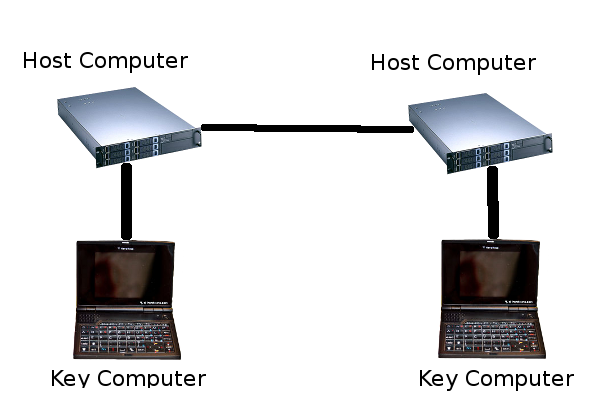
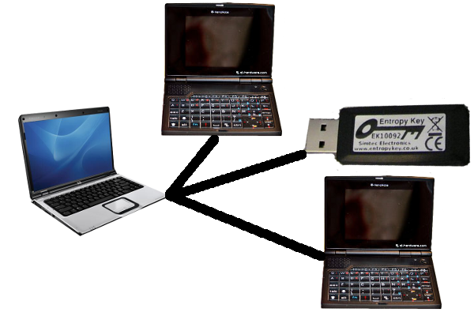

|
December 29, 2010
One Time Pad Hardware
A thought piece incorporating the NanoNote for encrypted communication
Background
The definition of a cryptography I most site is, "communication in the presence of adversaries".
Which is good because it reminds us that there is more to the field than just computer based techniques,
for instance so called
"quantum cryptography" has nothing to do with software algorithms.
Instead it seeks secure communication via physical phenomenon. Similarly, most of these ideas come from a time before computers anyway.
Never the less computer cryptography is an integral part of our lives today, even if it is quietly ignored by most of it's uses.
In the field of cryptanalysis, there is one key point everyone should understand – you
are not qualified to invent your own algorithms,
nor should you even try.
So what are software engineers like ourselves to do?
Typically, the correct approach is to use
existing implementations of published
widely accepted algorithms.
In practice, this really means choosing a category of cipher instead of a specific one. That is because as time goes on, what is an acceptable algorithm choice will inevitably change.
How can there be anything secure about a published cipher technique?
The reason is that, except for "one way" algorithms, all modern ciphers are based on the concept of separating the "secrete" components of an encryption scheme out into
keys.
So most real world everyday encryption in software on a high level, actually works in
terms of a abstract types of algorithms used in various combinations, with both the choice
of ciphers, and the keys for those procedures as somewhat interchangeable parts.
For that reason, most programmers just learn about the different algorithm types, how to
use them in various meaningful combinations, and other related secure programming techniques.
Algorithm Types
These base algorithm types would be what exactly? Of principle concern are three types.
First is the "one way" or
"hash" routines that take variable length input data and output a fixed sized "checksum".
Often these same algorithms are used for traditional checksum and hashing purposes without
a need for security.
The usefulness to secure applications comes from the aspired property that while it is easy to generate output from the input, the reverse is impractical or impossible.
Next is the so called,
"symmetric ciphers" group. These allow for secure input data to be converted into unreadable data using a key, and given the same key the reverse operation. This is the easiest to understand conceptually. The limiting factor here is how long would it take for the system to fail if every possible key where to be tried.
Often shortcuts to this are possible, such as knowing what some of the input was in the first place might allow the key to be derived, vulnerabilities in the cipher algorithm, or weakness in the randomness of the key itself.
It is common for elaborate schemes of "key rotation", and ciphering fake input data, to be employed.
There is another group known as "asymmetric" or "key exchange" ciphers.
As the name might imply, they are most used to securely exchanged keys for the above symmetric algorithms above.
In this group are the
"public key infrastructure" schemes we commonly see today where a two keys, one public and one private, additionally allow for secure digital "signatures"
Perpetual Motion
The world is constantly fighting for ways to both defeat these algorithms and to invent superior ones. It is not possible to say that a given is cipher is "secure", only that no one has publicly demonstrated a successful attack. In fact, someone might have already defeated the systems we use in https web traffic, ssh remote connections, your VPN, etc. No way to say for sure. We can say that for sure such things have happened in the past. That is why stronger and stronger ciphers keep getting used as the versions of those protocol specifications evolve. Is there a better way?
One very old idea holds such a promise. The so called "one time pad" cipher is, in theory, unbeatable. In short, for every one bit of data you wish to securely transmit, combine it with one bit of random data. Securely share the random bit with the person / computer you are talking to, and no one else will ever be certain if your secret bit of data was a 1 or a 0. The "one time" comes from the aspect that the random bit is used only once. Too good to be true? The devil is in the details. How do you get enough good quality random data?
How do you securely share and hide the random key?
How do you coordinate which bit of random data you are using? Plus, the overall system might (and will) have other vulnerabilities that compromise it in other ways.
This is why the approach is sometimes criticized as cryptography's "perpetual motion machine".
That is not to say, that the technique does not have a history of success, or that it can not be used to improve existing systems.
Randomness
The idea that it would be difficult to generate enough random numbers for a cryptographic system at first sounds outlandish.
Although this in theory and in practice, is often the weakest point. If the number of possible keys could be reduced from a trillion to a thousand simply because something about the way the key was generated was known, such an
attack vector
would be, and has been used.
It is especially hard for a computer, because it is a machine designed to follow instructions
predictably, consistently, and repeatably.
While pseudo-random numbers are common place for things like video game logic, cryptographically strong random numbers are hard to obtain.
Sometimes, the outside world is mined for sources of entropy, like how often a network
collision took place in the previous second, the interrupts generated from a mouse moved
by a human hand, what the value of all the pixels on the screen currently are, and so forth.
For virtual machines serving secure connections at high rates, where many random keys need
to generated quickly and consistently, this can be very real problem.
Enter the notion of
hardware based
random number generators.
Such devices of high quality do exist, and are generally found on such devices as SSL accelerator cards.
When VIA started incorporating random number generators on their
cpu line up,
I thought this would start a trend.
As it turns out there are some design concerns about being able to have random enough
noise inside a high clock rate, microscopic, CPU.
Recently, I noticed that there are some great choices for dedicated random number generating hardware.
In particular, the affordable USB dongle, the
Entropy Key, which is all about out of the box
compatibility with debian linux.
One way or another I think one could now overcome most of the problems with generating
the large amounts of random data needed for one time pad schemes.
Secure Key Holding
Even if two peers had a great set of random data to use, and they exchanged it securely – say physically handing off a flash drive – what would keep someone from just stealing that dataset? Suppose you physically brought a drive full of random numbers to an unstaffed office as part of a hypothetical one time pad based vpn. You would not be able to guarantee someone hadn't just broken in and copied the one time pad. Or imagine after going to all that trouble the machine holding the pad data was compromised. What would stop someone from just copying it remotely. Even if you knew such a break in took place, you would still have to create a new pad.
Protection from remote attack could be enhanced if the pad was stored on a separate computer. Perhaps an embedded system with no connections other than to the host computer (the one using the encryption system) via dedicated link. Acting somewhat like a smart card, the pad would never have to leave the key system. Instead it would perform operations on behalf of the host system. A remote attacker who compromised the host system would be able, at most, to perform operations, not steal the pad. Stealing that pad would require compromising the key system through the host system. If the key system itself had a user interface, i.e. lcd and buttons, or keyboard and screen, then the "attack surface" of the key system could be further reduced by not requiring any sort of "configuration software" on the host system that might be leveraged for an attack.
Still, having the pad (random bits) just laying around on a flash card or drive would be serious week point. One option would be to store the pad in RAM only. That would reduce some of the physical attacks on the system (copying a flash card), but would: limit pad size to available RAM, require the system be powered for the duration of system availability, and complicate the key exchange procedure. However, there is no reason why combinations of cryptographic techniques can't be used in the picture.

By bringing in already proven public key infrastructure techniques mentioned above, a system could easily be put together as follows. Two peers share a random one time pad. Locally the pad is divided into segments. Each segment might track some meta data such as if it has already been used. When the pad is used for operations the segment id would also be referenced as part of the message. Each section would also be encrypted with a symmetric cipher. The keys for these cipherings are different on each peer. These keys are then encrypted using the public key in a PKI system
(ie RSA) for the peer. So in order to even locally lookup what the random bits are for a section of a the pad, the remote peer would have to decrypt an intermediate key for you.
To physically attack the system as a whole, both peers would need to be compromised.
If the host / key system at each peer model, discused above, was used, then a totall of four
computers would need to be comprised for remote attack to be completely successful.
The one time pad would never be transmitted. If the symmetric or asymmetric ciphers were comprised the system is still secure to eavesdropping (man in the middle) attacks. Since that input data sent to the the symmetric cipher was, in theory, truly random, an attempt to guess the intermediate key would not have any way of knowing if it was correct, or would the input help derive the key. If the key was compromised (say in the case of one peer's key system was comprised, or the security of the intermediate key transmission failed) while the other peer sent it over, the use of different keys for different segments would provide some mitigation. All in all, it would certainly a more secure system than without the incorporation of the one time pad.
What could it be used for?
For two way communications, different sections of the pad are designated for sending data
in either direction (same thing as two pads).
While digital signatures
in the PKI sense, are not possible, host / identity verification is.
Normally, identify verification is done by demonstrating possession of the private key matching a known public key (usually within a certificate).
Demonstrating possession of the one time pad for the same purpose could be done by simply sending a secrete randomly generated challenge message on a round trip.
Ideally a combination of both types of keys would be required.
The TLS (ssl/https)
stack could be modified to use such a system, but it would be more complicated than say
the "smart card with private certificate key" arrangements.
That is because by "using" such as system, several things could be meant: improved host verification security, improved session key exchange security, or even full one time pad encrypted traffic.
It is difficult to imaging how that would work out in the TLS protocol.
On the other hand,
ssh has more flexibility, with a
more free form cipher negotiation phase before the key exchanges. Of course custom applications could be made to use the scheme such as secure mail and messaging.
Ideally, some sort of integration with
Gnome keyring /
KDE wallet could be created to both enhance some of those programs existing features, and to allow for a generic driver / interface to the external key system's operation set with fined grained local access controls. Not a simple task, but certainly possible.
The OpenSSL and
gcrypt libraries have some
support for cryptographic hardware which perhaps could be utilized for these purposes.
What Hardware To Use?
The Entropy Key randomness generator would be a good place to start for pad generation. For the key system, another unusual device might fit the bill perfectly.
I had elaborate plans for the NanoNote until I finally
got one.
I was just dumbfounded with the realization that it only had USB guest,
not host support.
With no other connectivity, you can only externally communicated with device via a host computer. However that would be exactly would you want in this application. The host computer "thinks" a usb nic is plugged in attached to a crossover cable connected to another computer.
The NanoNote has a local display and keyboard which would definitely be useful.
The device is small and easily transportable for physical exchange of one time pads.
An internal battery would let you hold keys in RAM if you wanted to go that route,
and the micro sd card could hold a sufficiently large pad for many applications.
Another good attribute about the NanoNote is the “trustworthiness” of the hardware.
There is no ultra sketchy ACPI byte code,
Intel remote pc assist,
"trusted computing", etc.
Of course, there is room for improvement, such as the
XBurst being
a Chinese die.
Then again there is no such thing as truely trustable hardware outside of a laboratory.
I imagine a setup where for each peer you wanted to communicated with, the key systems
for both peers would have to be locally connected to a trusted computer
(perhaps dedicated old laptop) for pad generation, etc.
This would only need to be done once every time you ran out of "pad", which if your were
only doing host verification and symmetric key exchange could be potentially a very long time.
Somewhat like generating new
certificates periodically is done now.

I did a search just now, and while there are some commercial one time pad dongle style solutions out there, I don't know what lengths they go to. Even still, a closed source encryption system is considered by many in the security field to be utterly useless since there is no way to ever know who has had their hand in the code.
That is not to say that someone could not maliciously or inadvertently taint the code in
an open system (it has been known to happen), but eventually such things get noticed.
Now What?
This is not something I can really work on right now, but I wish I could. At least I made the effort to write it down so that someone else who might have otherwise been uninspired might find it.
If you are interested in starting some sort of collaborative effort drop me a line.
For that matter, if you are interested in contracting me to make such a system, especially let me know.
Final Thought
Again remember that one time pads are nothing new, and schemes similar to what I have
described are almost certainly in use right now in situations warranting the highest
security available.
As far as the security if the current main stream algorithmic ciphers goes, I'm of the
opinion that we probably would not be allowed to know about the existence of most of
these techniques if they were not deflatable by somebody somewhere in the first place.
UPDATE: Check out this scary LWN
article.
© 2010 C. Thomas Stover
cts at techdeviancy.com
back
|